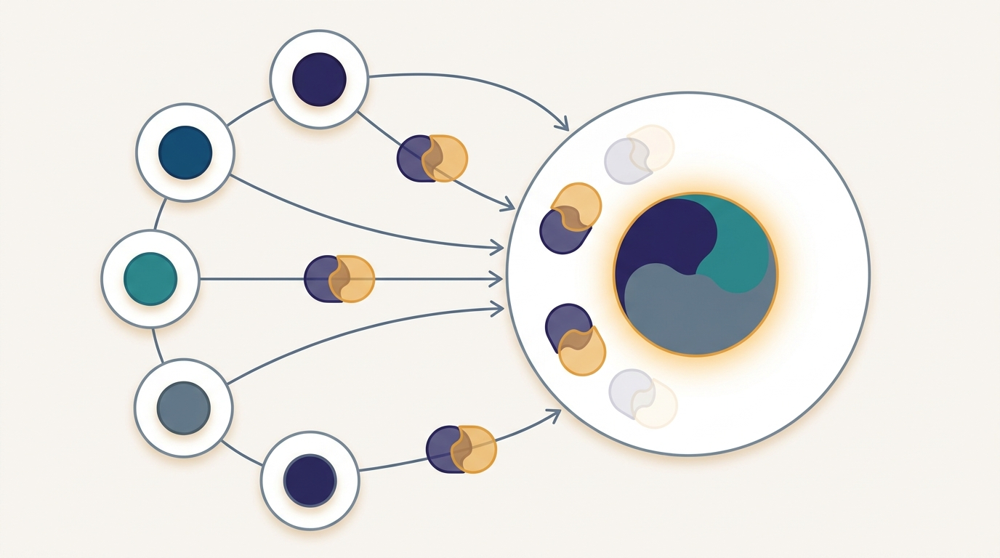

"They promised the server would only ever see the sum. Then someone inverted my gradient and read my diary back to me, line by line."
A Client That Trusted the Aggregator

Federated learning keeps raw data on each device, but the model updates it sends instead are not automatically private: a gradient can be inverted to reconstruct the very examples it was computed from. The promise that "data never leaves the device" is therefore only half a privacy guarantee. Two complementary defenses close the gap. Secure aggregation uses cryptography so the server learns only the sum of all client updates and never any single one, with the protective masks cancelling exactly when enough clients report. Differential privacy adds calibrated noise so that no single client's data can be distinguished in the result, buying a formal mathematical guarantee at a measured cost in accuracy. This section builds both from first principles, runs a masked aggregation by hand to show the server recovering the exact sum it is entitled to and nothing else, and quantifies the privacy-utility trade-off that every deployment must price. The mental model above is the whole secret in one picture: paired masks that cancel in the sum, so the total survives and no single contribution does.
The previous section reduced the bytes each client sends, treating the update as a payload to compress. This section asks a sharper question about that same payload: what does it reveal? Federated learning's founding pitch is that raw data stays put and only model updates travel. That is a real improvement over shipping the data to a central store, but it is not, by itself, privacy. An update is a function of the data that produced it, and functions can be inverted. A curious or compromised server that receives one client's gradient can often run an optimization in the opposite direction, asking "what input would have produced this gradient?", and recover a recognizable copy of the client's training examples. The attack has a name, gradient inversion, and it works disturbingly well on the small batches typical of cross-device federated learning. So "we only send updates" must be hardened into "the server cannot tie any update to any client, and cannot tell whether any particular example was used at all." Those are two different guarantees, and they need two different tools.
1. Why Updates Leak Intermediate
Consider a single client computing the gradient of its loss on one labeled example $(x, y)$ with the current model $w$. The gradient $g = \nabla_w \ell(w; x, y)$ is a vector with as many entries as the model has parameters, and it depends on $x$ in a structured, often invertible way. For a fully connected layer, the gradient with respect to the weights is an outer product of the layer's input with the back-propagated error, and from that outer product the input can frequently be read off directly. An attacker who holds $g$ and knows the model architecture sets up an optimization over a dummy input $\hat{x}$ that minimizes $\lVert \nabla_w \ell(w; \hat{x}, \hat{y}) - g \rVert^2$, and for small batches the recovered $\hat{x}$ converges to a near-pixel-perfect copy of the original. A weaker but still serious attack, membership inference, does not reconstruct the example but decides whether a specific known example was in the training set, which is enough to leak that a particular patient's record contributed to a medical model.
The lesson is that an update is sensitive data, not a sanitized summary of it. Two properties would make federated aggregation safe. First, the server should never see an individual update in the clear, only the aggregate over many clients, so there is no single gradient to invert. Second, the aggregate itself should not reveal whether any one client's example was present, so that even the sum leaks nothing about an individual. Secure aggregation delivers the first property; differential privacy delivers the second. They compose, and serious deployments use both.
Keeping raw examples on the device removes one threat (a central data lake to breach) but leaves another wide open: the updates themselves carry enough information to reconstruct or fingerprint the data that made them. Privacy in federated learning is not a property you get for free by not moving the data; it is a property you must engineer into the aggregation step. Ask of any federated system not "does the data move?" but "what can the server learn from everything it receives?"
2. Secure Aggregation: The Server Sees Only the Sum Intermediate
Secure aggregation is a cryptographic protocol that lets a server compute $\sum_{k} u_k$, the sum of all client updates, without ever seeing any individual $u_k$. The core trick is elegant and needs no heavy machinery to understand: pairwise cancelling masks. Every pair of clients $(i, j)$ agrees on a shared random vector $m_{ij}$, derived from a secret they establish with a key exchange so that neither the server nor any third party knows it. Client $i$ adds $m_{ij}$ to its update and client $j$ subtracts the same $m_{ij}$. Each client sends its update plus the sum of all its pairwise masks. Individually, a masked message looks like uniform noise to the server. But when the server adds up all the masked messages, every mask $m_{ij}$ appears exactly twice, once with a plus sign from client $i$ and once with a minus sign from client $j$, so all masks cancel and the clean sum remains. Writing $u_k$ for client $k$'s update, what the server receives and then sums is
$$\sum_{k=1}^{K} \Big( u_k + \!\!\sum_{j \neq k} \operatorname{sgn}(k, j)\, m_{kj} \Big) \;=\; \sum_{k=1}^{K} u_k \;+\; \underbrace{\sum_{i < j} \big( m_{ij} - m_{ij} \big)}_{=\,0} \;=\; \sum_{k=1}^{K} u_k,$$where $\operatorname{sgn}(i,j) = +1$ for the lower-indexed partner and $-1$ for the higher-indexed one. The masks vanish only because every pair contributes a matched $+m_{ij}$ and $-m_{ij}$; this is the same algebra of cancelling contributions that makes an all-reduce sum order-independent, the collective primitive built in Section 4.7. Secure aggregation is, in effect, an all-reduce whose intermediate values are cryptographically blinded. Figure 14.6.1 shows the flow: masked messages go up, masks cancel, only the sum comes down.
One subtlety makes secure aggregation more than a parlor trick: dropout tolerance. In cross-device federated learning many clients vanish mid-round (a phone locks, a network drops), and a client that fails to report leaves its masks uncancelled, which would corrupt the sum. Real protocols solve this with secret sharing: each client splits its mask seeds into shares distributed to others using a threshold scheme, so the server can reconstruct and remove the masks of clients that dropped, but only if at least a threshold number of clients survive the round. This is the privacy analogue of the dropout tolerance that Chapter 14's earlier sections build into the aggregation schedule: the masks cancel only when enough clients report, and below that threshold the server learns nothing, not even a partial sum. The runnable demo in Section 4 implements the masking core; production handles the secret-sharing recovery for you.
3. Differential Privacy: Bounding What One Client Reveals Advanced
Secure aggregation hides individual updates, but the sum it reveals can still leak information about a single client if that client's contribution dominates. Differential privacy (DP) closes this by a formal guarantee: a randomized mechanism $\mathcal{M}$ is $(\varepsilon, \delta)$-differentially private if, for any two datasets $D$ and $D'$ that differ by one client's data and any set of outcomes $S$,
$$\Pr[\mathcal{M}(D) \in S] \;\le\; e^{\varepsilon}\, \Pr[\mathcal{M}(D') \in S] \;+\; \delta.$$Read plainly: adding or removing any single client changes the distribution of outputs by at most a multiplicative factor $e^{\varepsilon}$ (plus a small slack $\delta$). A small $\varepsilon$ means strong privacy, because the output barely depends on whether your data was included, so an adversary cannot confidently infer your membership. The standard recipe to achieve this for federated averaging has two steps. First, clip each client's update to a bounded $L_2$ norm $C$, so no client can move the aggregate by more than a known amount; this bounds the mechanism's sensitivity. Second, add Gaussian noise with standard deviation proportional to that bound, $\sigma = z\, C / K$ on the average of $K$ clients, where the noise multiplier $z$ sets the strength. The Gaussian mechanism then satisfies $(\varepsilon, \delta)$-DP with
$$\varepsilon \;=\; \frac{C \sqrt{2 \ln(1.25/\delta)}}{\sigma\,K} \;=\; \frac{\sqrt{2 \ln(1.25/\delta)}}{z},$$so a larger noise multiplier $z$ directly buys a smaller $\varepsilon$, that is, stronger privacy. The price is accuracy: the injected noise perturbs the averaged update, and the model converges to a slightly worse solution. This is the privacy-utility trade-off, and it is not optional folklore but a quantity you tune. We add only a forward pointer here, because the full accountant machinery that tracks how $\varepsilon$ accumulates over many training rounds, and how DP behaves across a distributed system, belongs to Chapter 35; the clinical setting where these guarantees become a regulatory requirement is the subject of the federated medical AI case study in Chapter 37.
Secure aggregation does not invent a new communication pattern; it borrows the one this book has used since the first chapter. Summing blinded updates so the masks cancel is structurally the all-reduce of Chapter 4, now wrapped in cryptography, and it carries the same dropout-tolerance concern as elastic aggregation. The scale-out story keeps paying dividends: once you can sum vectors across machines correctly and robustly, you can sum them privately with a small extension. Privacy is not a separate subsystem bolted on; it is the aggregation primitive, hardened.
4. Building It: Masked Aggregation and the Privacy-Utility Trade-off Intermediate
The code below implements both defenses on small vectors so the mechanism is visible. The secure-aggregation half builds pairwise masks from shared per-pair seeds, has each client send only its blinded message, and shows the server recovering the exact sum while a single masked message reveals nothing recognizable about that client's true update. The differential-privacy half clips each update to a norm bound and adds Gaussian noise to the average, sweeping the noise multiplier $z$ to measure how the error against the clean (non-private) average grows as privacy strengthens.
import numpy as np
# ---- Setup: K clients, each holds a private d-dimensional model update ----
rng = np.random.default_rng(7)
K, d = 5, 4
updates = rng.standard_normal((K, d)) # the secret each client wants to hide
true_sum = updates.sum(axis=0) # what the server is allowed to learn
# ---- Secure aggregation: pairwise masks that cancel in the sum ----
# For each unordered pair (i, j) both clients derive the SAME random mask from a
# shared seed (in practice via a Diffie-Hellman key exchange). Client i adds it,
# client j subtracts it. Summed over all clients, every mask appears once with a
# + and once with a -, so the masks vanish and only the true sum survives.
masks = np.zeros((K, d))
for i in range(K):
for j in range(i + 1, K):
seed = 1000 * (i + 1) + (j + 1) # shared pairwise seed
m = np.random.default_rng(seed).standard_normal(d)
masks[i] += m # client i adds m_{ij}
masks[j] -= m # client j subtracts m_{ij}
masked = updates + masks # what each client actually sends
recovered = masked.sum(axis=0) # server sums the masked messages
print("=== Secure aggregation (masks cancel in the sum) ===")
print("a single masked message (server sees this):", np.round(masked[0], 3))
print("that client's true update (server never sees):", np.round(updates[0], 3))
print("recovered sum :", np.round(recovered, 6))
print("true sum :", np.round(true_sum, 6))
print("max abs sum error:", f"{np.max(np.abs(recovered - true_sum)):.2e}")
# ---- Differential privacy: clip per-client, then add Gaussian noise ----
# Bound each client's contribution by clipping its L2 norm to C, then add
# Gaussian noise with std sigma = z * C / K to the AVERAGED update. Larger z
# means stronger privacy (smaller epsilon) but a noisier, less accurate result.
def dp_average(updates, C, z, key):
clipped = np.array([u * min(1.0, C / np.linalg.norm(u)) for u in updates])
avg = clipped.mean(axis=0)
noise = np.random.default_rng(key).normal(0.0, z * C / K, size=d)
return avg + noise
clean_avg = updates.mean(axis=0)
print("\n=== Differential privacy (clip + Gaussian noise) ===")
print(f"{'noise mult z':>12} | {'avg L2 error vs clean':>22}")
for z in (0.0, 0.5, 1.0, 4.0):
errs = [np.linalg.norm(dp_average(updates, C=2.0, z=z, key=s) - clean_avg)
for s in range(2000)]
print(f"{z:>12.1f} | {np.mean(errs):>22.4f}")
=== Secure aggregation (masks cancel in the sum) ===
a single masked message (server sees this): [-1.611 -1.698 -0.706 -1.313]
that client's true update (server never sees): [ 0.001 0.299 -0.274 -0.891]
recovered sum : [-2.184447 -2.70146 -1.654627 0.212276]
true sum : [-2.184447 -2.70146 -1.654627 0.212276]
max abs sum error: 4.44e-16
=== Differential privacy (clip + Gaussian noise) ===
noise mult z | avg L2 error vs clean
0.0 | 0.1401
0.5 | 0.3993
1.0 | 0.7633
4.0 | 3.0048
Two facts in the output deserve emphasis. The masked message $[-1.611, -1.698, \dots]$ looks nothing like the client's true update $[0.001, 0.299, \dots]$, yet summing five such blinded messages reproduces the true sum exactly: that is the whole value proposition of secure aggregation, perfect aggregate fidelity with zero individual exposure. In the DP half, the error is not noise added for its own sake; it is the precise, tunable price of the $(\varepsilon, \delta)$ guarantee from Section 3. A deployment chooses where on that curve to sit, and the small residual error at $z=0$ is a reminder that clipping alone, before any noise, already perturbs the result.
Code 14.6.1 shows the mechanism, but production DP needs a privacy accountant that tracks how $\varepsilon$ compounds across thousands of training rounds, plus per-sample gradient clipping done efficiently inside the backward pass. For PyTorch, Opacus wraps an optimizer so that clipping and Gaussian noise are applied automatically and the spent $\varepsilon$ is reported after each step; for TensorFlow, TensorFlow Privacy offers DP variants of the standard optimizers. The hand-written clip-and-noise loop and the manual moment-accounting collapse to a few lines:
# pip install opacus
from opacus import PrivacyEngine
privacy_engine = PrivacyEngine()
model, optimizer, data_loader = privacy_engine.make_private(
module=model, optimizer=optimizer, data_loader=data_loader,
noise_multiplier=1.0, # the z from Code 14.6.1
max_grad_norm=1.0, # the clipping bound C
)
# train as usual; Opacus clips per-sample grads, adds noise, and tracks epsilon
epsilon = privacy_engine.get_epsilon(delta=1e-5)
Who: A privacy engineer on a mobile keyboard team training a next-word prediction model across millions of phones.
Situation: The model improved markedly when trained on real typing, but the data was the most sensitive imaginable: private messages, passwords typed into the wrong field, medical searches.
Problem: Federated learning already kept text on the device, yet a red-team showed that a single phone's gradient could be inverted to recover rare typed phrases verbatim, so "on-device" was not enough to promise users.
Dilemma: Ship the federated model as-is and risk that a compromised server reconstructs user text, or add privacy layers that slow training and slightly dent prediction quality.
Decision: They layered both defenses: secure aggregation so the server only ever saw sums over thousands of phones, and client-level differential privacy with a noise multiplier tuned to a target $\varepsilon$ agreed with the privacy review.
How: Masks were established by pairwise key exchange with secret-sharing for dropout recovery, updates were clipped to a fixed norm, and Gaussian noise was added to the aggregate; the spent $\varepsilon$ was tracked per release with an accountant like the one in Code 14.6.2.
Result: Gradient inversion against the server was no longer possible (no individual update was ever exposed), membership inference dropped to near chance, and word-prediction accuracy fell by a small, pre-agreed margin that users did not notice.
Lesson: The two tools answer different threats and belong together: secure aggregation removes the single gradient an attacker would invert, and differential privacy bounds what even the legitimate sum can reveal. Price the accuracy cost up front and treat $\varepsilon$ as a budget, not an afterthought.
Differential privacy can feel paradoxical: you deliberately corrupt your own gradients and the result is still useful. The resolution is that the noise is calibrated to the sensitivity of the computation, the most one client could ever change the answer, and not a decibel more. It is the statistical equivalent of speaking just loudly enough to be unintelligible to an eavesdropper one table over while your dinner companion, hearing the average of a crowded room, still makes out the conversation.
5. The Trade-off You Must Price Intermediate
Privacy is never free, and the two defenses cost differently. Secure aggregation is, pleasingly, lossless on accuracy: the recovered sum is exact, as Output 14.6.1 confirms, so its cost is purely in communication and protocol complexity (extra key-exchange rounds, secret-sharing for dropout, and bandwidth for masks the size of the update). Differential privacy, by contrast, is lossy by design: the noise that buys the $(\varepsilon, \delta)$ guarantee also degrades the model, and a smaller $\varepsilon$ means a noisier, weaker model. The engineering question is therefore not "should we add privacy?" but "what is the smallest $\varepsilon$ we can promise while keeping accuracy acceptable, and have we removed every individual update from the server's view first?" In a well-built system the answer combines both: secure aggregation makes the server's view an aggregate, and a modest amount of differential-privacy noise on that aggregate bounds residual leakage, often at a far smaller accuracy cost than DP applied to individual updates would incur, because noise added once to a sum of thousands is proportionally tiny.
The threat side keeps advancing. Gradient-inversion attacks have moved from toy settings to larger batches and transformer models, with recent work reconstructing text and high-resolution images from aggregated or compressed updates that were once assumed safe, sharpening the case that compression is not privacy. On the defense side, large-scale deployments of differentially private federated learning have matured: production systems now train on-device language and ranking models under explicit, audited $\varepsilon$ budgets, and research on tighter privacy accounting via Renyi DP and the related accountants lets practitioners spend a given budget over far more training rounds than the early Gaussian-mechanism bounds allowed. A parallel line studies the interaction of secure aggregation with Byzantine-robust aggregation, since the cryptography that hides updates also hides malicious ones; reconciling "the server sees only the sum" with "the server must reject poisoned contributions" is an active and genuinely hard frontier that Chapter 35 takes up directly.
With privacy in place, the federated story has its safety guarantee: data stays local, no individual update is ever exposed, and the formal $(\varepsilon, \delta)$ bound limits what even the aggregate can betray. The next question is one of accuracy rather than secrecy. Clients hold different data distributions, and a single global model may serve none of them well; Section 14.7 turns to personalized federated learning, where each client adapts the shared model to its own data while still benefiting from the crowd.
6. Gradient-Inversion Attacks and Byzantine-Robust Aggregation Advanced
The practical-example in Section 4 mentioned gradient inversion as the threat that motivated layering both defenses. This section makes the attack concrete and then turns to a second, distinct threat that operates from inside the federation rather than outside it.
Gradient inversion, introduced by Zhu et al. (2019) and sharpened by Geiping et al. (2020), treats the received gradient update as the target of an optimization. Given the gradient $\nabla_{W} \mathcal{L}$ that a client uploaded and the model architecture, an attacker constructs a dummy input $\hat{x}$ and adjusts it to minimize
$$\min_{\hat{x}}\; \bigl\|\nabla_{W} \mathcal{L}(\hat{x}) - \nabla_{W} \mathcal{L}_{\text{observed}}\bigr\|^2.$$On small batches (fewer than eight to sixteen examples) the recovered $\hat{x}$ converges to near-pixel-accurate reconstructions of the client's actual training images. On text, the attack can extract near-verbatim token sequences. The attack fails when batches are large (more clients averaged together) or when sufficient Gaussian noise is added to the gradient before exposure. Differential privacy with an appropriately chosen noise scale $\sigma$ is the primary defense: once the signal-to-noise ratio falls below a threshold determined by the sensitivity of the architecture, the optimizer finds only noise. The cost is the accuracy degradation the DP sweep in Code 14.6.1 already quantified.
Secure aggregation (encrypting each gradient from the server's view) protects against a curious server but does not protect against gradient inversion by other clients who collude to isolate and reconstruct one participant's contribution. Differential privacy is the only known defense against reconstruction given the gradient itself, because it destroys the fine structure of the update that the inversion optimizer relies on. A complete deployment needs both: secure aggregation removes the individual gradient from the server's view, and differential privacy bounds what even a colluding coalition can extract from the sum they are permitted to see.
Byzantine robustness addresses a different adversary: a malicious or misconfigured client that sends arbitrary gradients with the intent of corrupting the global model. FedAvg is not Byzantine-robust: a single malicious client contributing a sufficiently large, carefully chosen gradient can shift the aggregate arbitrarily far in any direction, since the average gives every client equal weight. Robust aggregation rules replace the mean with an estimator that is insensitive to a bounded fraction of extreme inputs. The three most studied rules are: Krum, which selects the update closest in $\ell_2$ distance to its $n-f-2$ nearest neighbors (discarding the $f$ most distant, where $f$ is the assumed number of malicious clients); coordinate-wise median, which computes the median independently at each parameter dimension; and FLTrust, which uses a small clean validation set at the server to assign trust scores to client updates and down-weights outliers. A 2025 SoK paper at USENIX Security (Carletti et al.) surveys the full attack-and-defense landscape, benchmarking these aggregation rules against a suite of modern poisoning and backdoor attacks.
The attack side has not stood still. Adaptive poisoning attacks that anticipate robust aggregation rules can evade Krum and coordinate-wise median by keeping malicious updates within the same $\ell_2$ ball as honest ones, and new certified-robustness guarantees that bound what a bounded-fraction adversary can shift the model by are an active research area. A parallel tension noted in the Section 5 research-frontier callout persists: secure aggregation, by hiding individual updates from the server, also prevents the server from inspecting updates for signs of Byzantine behavior, so the cryptographic guarantee and the robustness guarantee are in direct conflict. Reconciling them, likely through zero-knowledge proofs that certify an update is within a valid norm ball without revealing the update itself, is one of the field's open problems.
In the secure-aggregation protocol of Section 2, the server sees each client's blinded message and the final sum, but never an individual update. (a) Explain why a single masked message is uninformative even though the server knows the masking scheme. (b) Now suppose only two clients participate in a round. Argue that, even with perfect masking, the server can recover each individual update from the sum if it already knows one of them, and explain why a minimum-client threshold is therefore a privacy requirement, not just a dropout-recovery convenience. (c) State what additional protection differential privacy adds that secure aggregation alone cannot, even with thousands of clients.
Extend Code 14.6.1 so that, in addition to the averaging error, it estimates the realized $(\varepsilon, \delta)$ for each noise multiplier using the Gaussian-mechanism formula $\varepsilon = \sqrt{2 \ln(1.25/\delta)} / z$ from Section 3 with $\delta = 10^{-5}$. Plot, or tabulate, $\varepsilon$ against the measured averaging error for $z \in \{0.5, 1, 2, 4, 8\}$ and identify the knee of the curve where further privacy starts costing disproportionate accuracy. Then vary the clipping bound $C$ at fixed $z$ and explain why a smaller $C$ reduces sensitivity but can also discard useful signal in large updates.
A federated round has $K = 10{,}000$ clients, each holding an update of $P = 2 \times 10^{6}$ parameters in 4-byte floats. (a) Estimate the extra bandwidth per client that pairwise masking adds if each client must send one masked vector the same size as its update, and compare it to the bandwidth of sending the raw update. (b) Differential-privacy noise added to the average has standard deviation $\sigma = zC/K$; explain quantitatively why the relative impact of this noise on the aggregate shrinks as $K$ grows, and why this makes DP cheaper in accuracy for cross-device (many clients) than for cross-silo (few clients) settings. (c) Argue from these numbers whether secure aggregation or differential privacy is the more expensive defense for this configuration, and on which axis (bandwidth or accuracy) each cost falls.